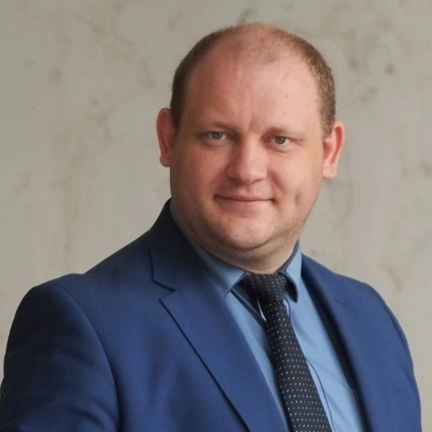
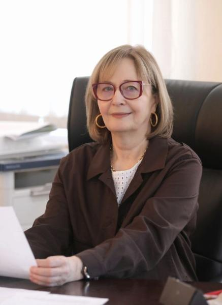
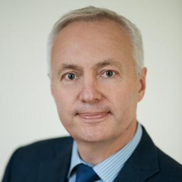
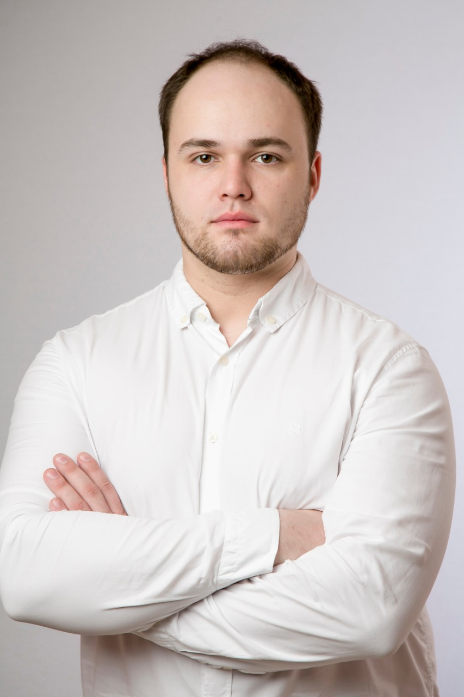
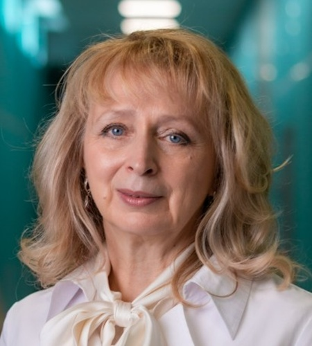
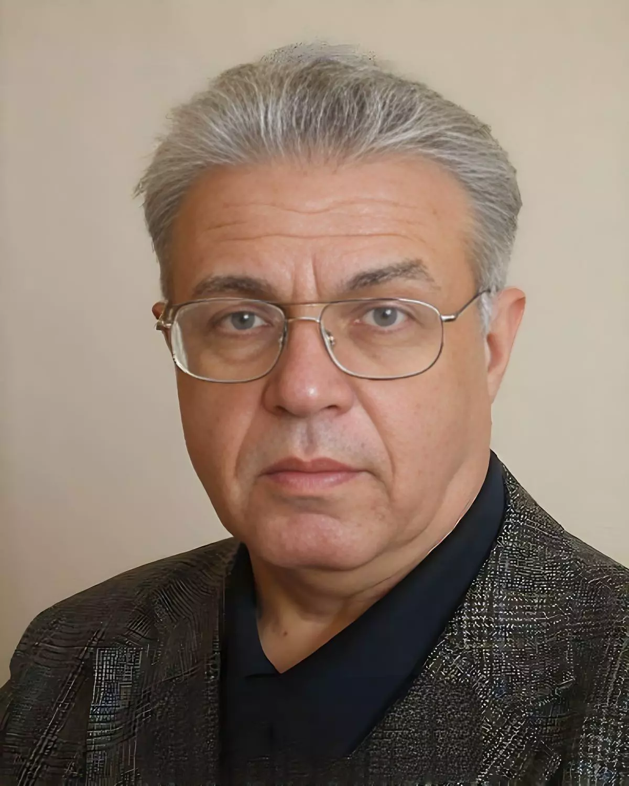
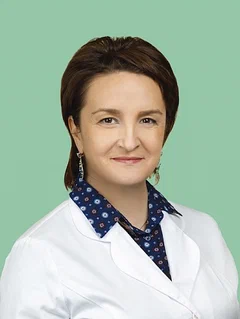

Наркевич Артем Николаевич
директор Департамента медицинского образования и кадровой политики в здравоохранении Министерства здравоохранения Российской Федерации

Андреева Лариса Михайловна
заместитель Председателя Правительства Ярославской области

Можейко Мария Евгеньевна
и.о. министра здравоохранения Ярославской области, д.м.н

Хохлов Александр Леонидович
ректор Ярославского государственного медицинского университета, академик РАН, д.м.н., профессор

Тюфилин Денис Сергеевич
начальник управления стратегического развития здравоохранения ФГБУ «ЦНИИОИЗ» Минздрава России

Черногорова Марина Викторовна, д.м.н.
профессор кафедры общественного здоровья и здравоохранения Ярославского государственного медицинского университета

Подольский Андрей Ильич, д-р психол. наук
руководитель департамента развития человеческого ресурса компании «Иннопрактика»
Белова Ксения Юрьевна, д.м.н., доцент
зав. кафедрой общественного здоровья и здравоохранения Ярославского государственного медицинского университета

Филатова Юлия Сергеевна, к.м.н.
зав. кафедрой клинической психологии Ярославского государственного медицинского университета
.jpg)
Смыслова Диана Викторовна
директор Территориального фонда ОМС ЯО